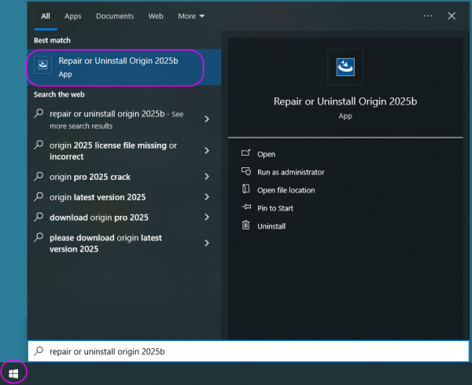
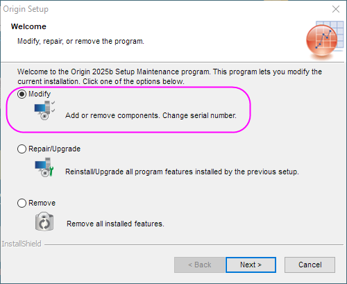
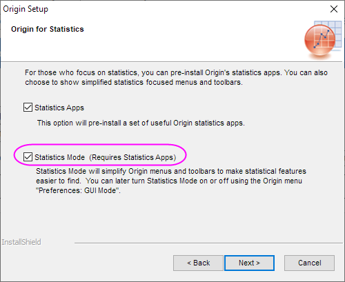
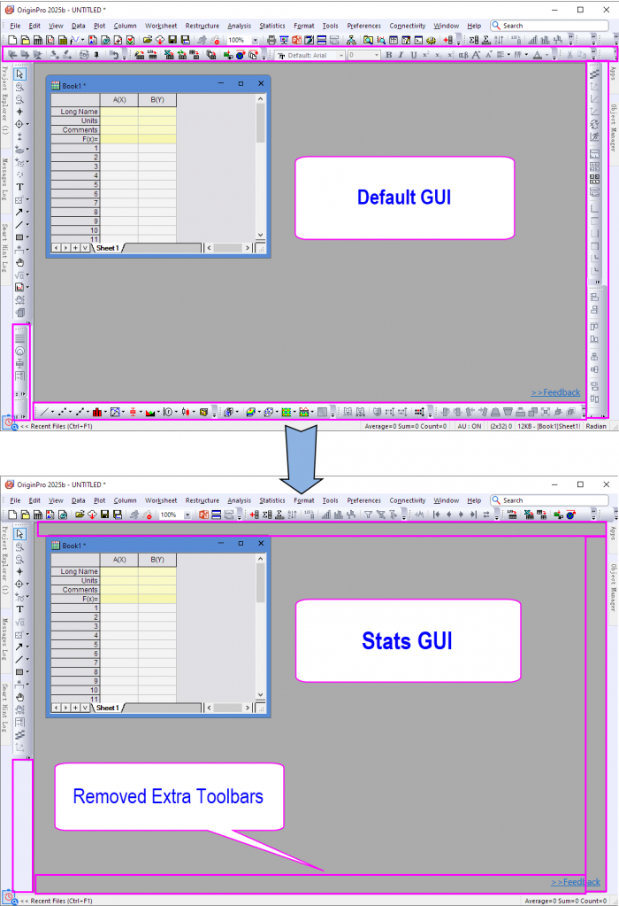
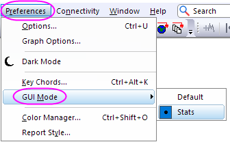
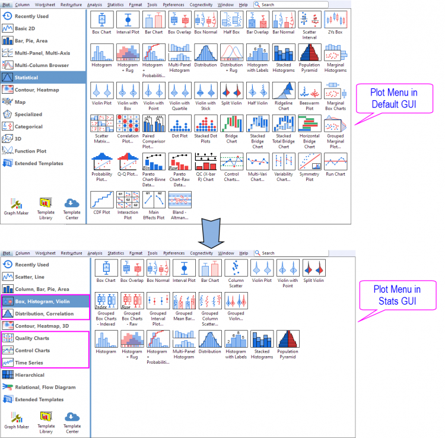
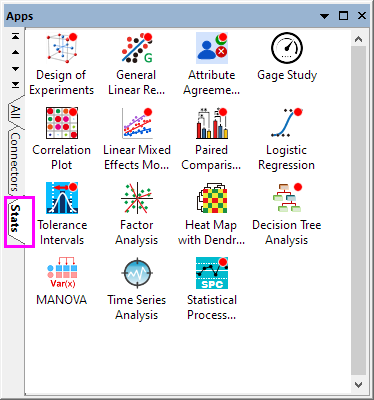

Configure OriginPro for Statistical use
Configure-Stats-use
Summary
Origin provides Statistics Mode from version 2025b. During installation, users have the option to pre-install a collection of Origin's statistical apps and enable a specialized Statistics Mode. This mode customizes the Origin interface to make statistical tools more accessible and easier to navigate.
What You Will Learn
This tutorial will show you:
- How to modify your existing installation to switch to statistics mode
- The difference between statistics mode and defaults interfaces and how to switch between them
Minimum Origin Version Required: OriginPro 2025b SR0
Modify installation to statistics mode
- In Start menu of your machine, search Repair or Uninstall Origin 2025b and click it.

- Open Origin Setup and select Modify option, click Next button three times.

- In the Origin for Statistics page, check the Statistics Mode option, and then Statistics Apps option will be checked auto. Click Next button twice. Origin installation will be adjusted.

Switch between statistics mode and defaults interfaces
- When we reopen Origin, you will find the interface is changed. The interface has been modified to hide unnecessary toolbars and menus to make accessing statistics focused features easier.

- You can switch between the statistics and defaults interfaces by the menu Preferences: GUI mode. You can select your desired interface. You may notice that many of the menu items in the default GUI are not present in the statistics GUI.

- In statistics mode, the Plot menu has been rearranged to feature the most used statistics plots.

- In statistics mode, the preinstalled statistics apps have been added to a new stats tab.
